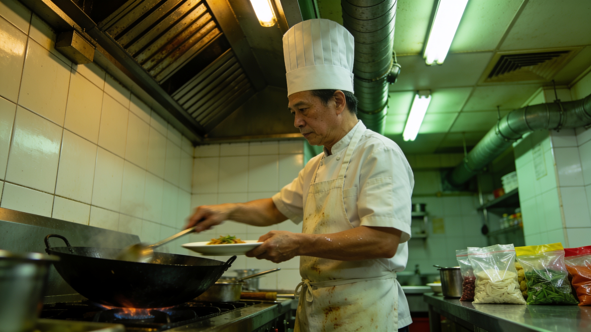
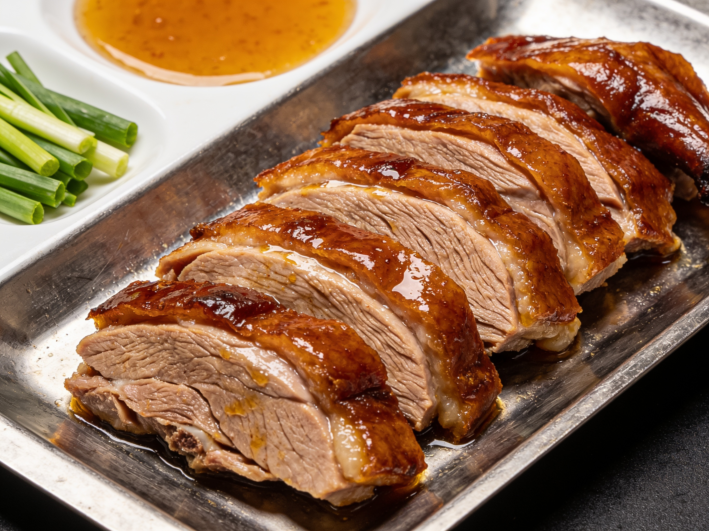
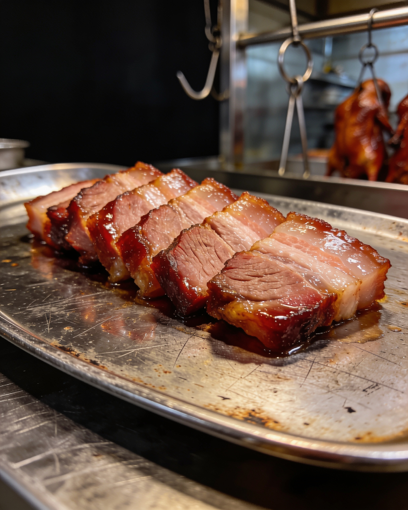

清遠御品
清遠雞產品方向，適合查詢規格、保存及使用方式。
Delights Origin 清遠御品 以清遠雞產品方向為核心。規格、保存、供應與批次資料按實際產品資料提供。
- 清遠雞產品方向
- 適合進一步查詢產品規格與使用方式
- 規格、保存與供應安排以正式產品資料為準
Product Systems
公開產品頁面先聚焦清遠御品與白玉浸雞。Food Lab、OEM、餐飲供應與其他合作內容，集中於 For Business，按項目查詢可提供資料。
清遠雞產品方向，適合查詢規格、保存及使用方式。
Delights Origin 清遠御品 以清遠雞產品方向為核心。規格、保存、供應與批次資料按實際產品資料提供。

經典熟食產品方向，適合查詢保存、包裝及供應安排。
白玉浸雞 以經典熟食產品方向為核心。保存、規格、包裝與供應細節按實際產品資料及查詢目的提供。

按菜式、包裝規格、使用方式與合作目標，整理可提供的產品資料與下一步。

由產品概念、包裝規格、首批量與時間表出發；MOQ、產能與交付能力需逐項確認。
For Business · Supply
Food Lab、OEM、餐飲供應與跨境合作按產品、目的地與可提供資料逐項確認。
 01 / Source
01 / Source
按產品與餐飲場景了解來源、規格與可提供的資料，實際供應關係需逐項確認。

02 / Product由產品方向延伸到熟製品、即煮菜式與門店規格，按合作目標整理產品資料與使用需求。

03 / Delivery出品標準、品牌口味、配送與冷鏈條件按實際產品、目的地與可提供資料確認。
For Business
Food Lab、OEM、餐飲供應與跨境合作，按產品、目的地與可提供資料逐項確認。